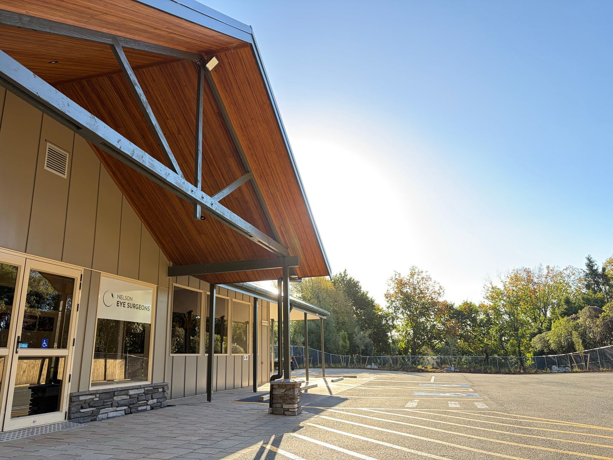
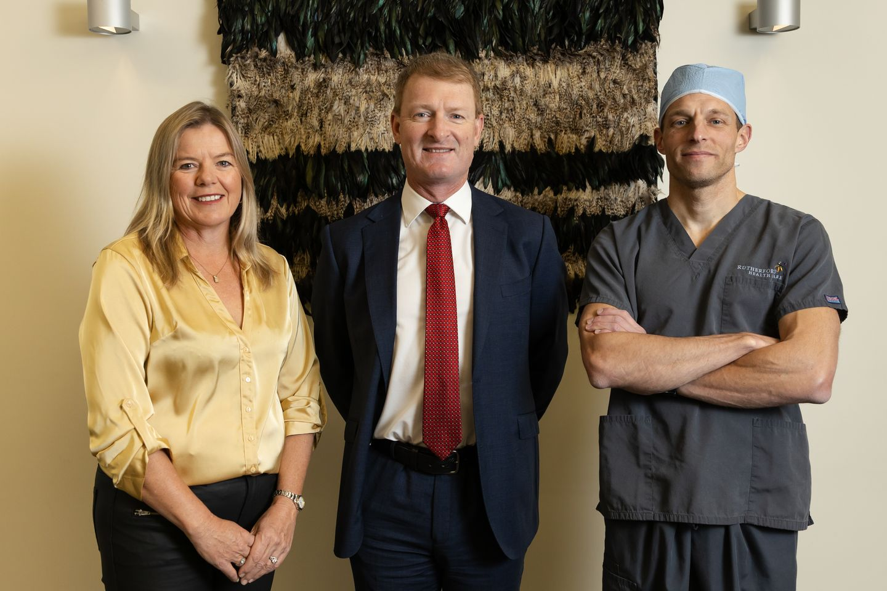

Nelson Eye Surgeons — Specialist Ophthalmologists
Of the five senses, we agree that your vision is the most important.
As your specialist ophthalmologists for the top of the South Island, you can trust us to look after it.
Local, Independent Eye Care
Based in Nelson. Here before, during, and after surgery.

We are a locally based, friendly and professional team of highly experienced, internationally trained surgeons, nurses, ophthalmic technicians and optometrists providing independent surgical and medical eye care to the top of the South Island including Nelson, Richmond, Motueka, Golden Bay and Marlborough.
NELSON EYE SURGEONS believe that exceptional surgical outcomes rely on continuity of care, timely follow-up, and long-term local support - not simply a procedure. Because we are based in Nelson, we are uniquely positioned to provide comprehensive ophthalmic care within the community, before, during, and after surgery.